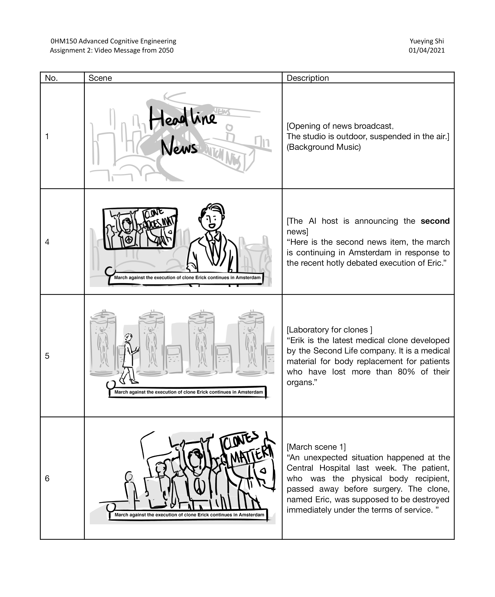
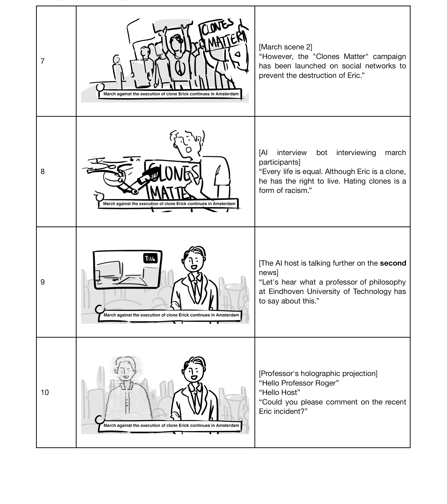
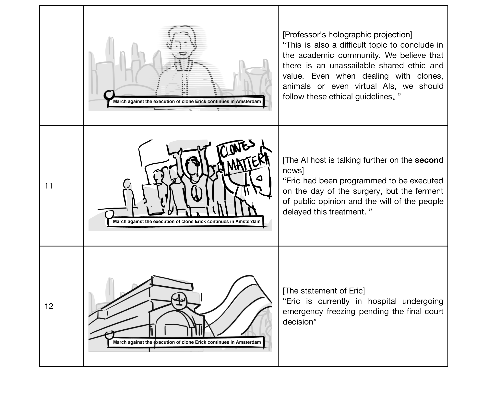

2050
2050's youtube found a "cell phone" in an "ancient house"
In our video we look at a vlog from a future vlogger, who looks at so-called “outdated technologies” we use in 2021. Throughout the video, the vlogger’s lack of understanding of outdated technologies because of how different they are from modern technologies is highlighted. We show what kinds of modern technologies our vlogger uses and how these modern technologies affect her and society’s life. We aim to stress that while these modern technologies are very cool and helpful in our daily life, it might also have implications in how we perceive the world and ethical considerations.
Future interface
Look for the possibility for furture interface and video editing.
Another 2050 Story
Another story which do not end up an video:In 2050, it is common for medical institutions to produce clones as "spare bodies" for patients. However, when a patient who was scheduled for a brain transplant suddenly dies, what should happen to the extra clones?
  